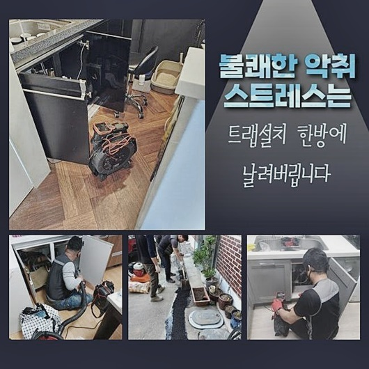
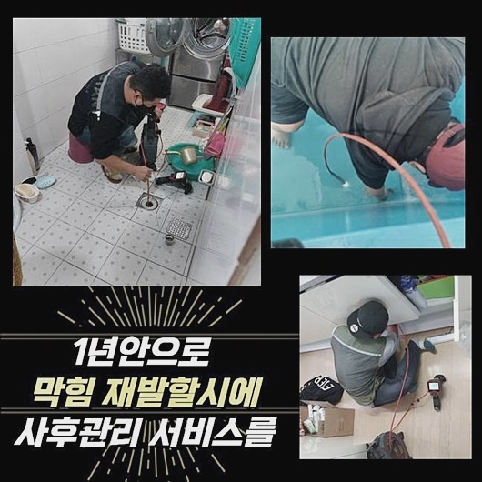
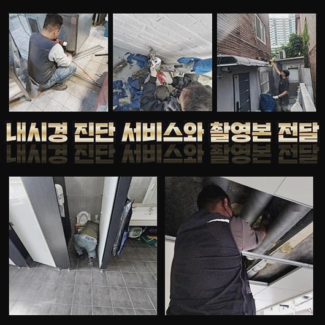
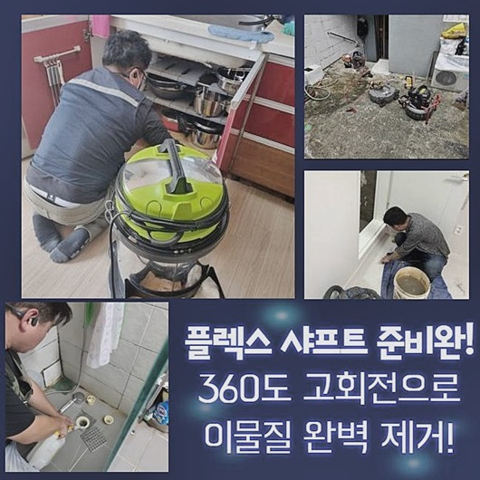
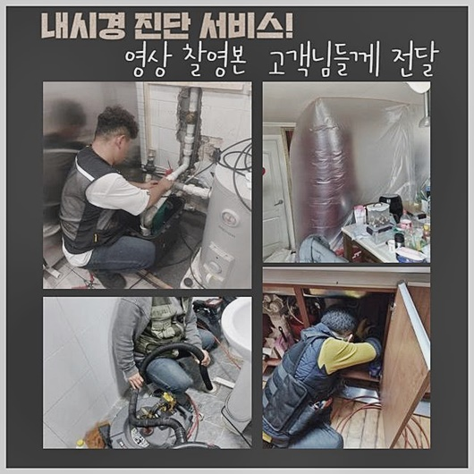
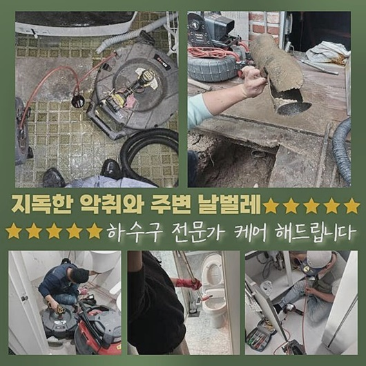
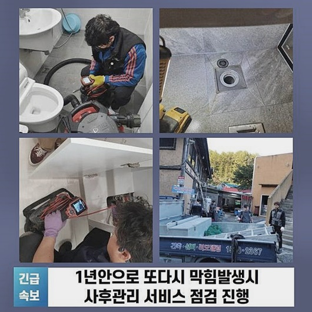

🏠 세마동세탁실역류 가수동 맨홀역류 배관막힘누수업체
오산시 가수동 배관막힘 전문 시공 후기

📋 작업 개요
- 위치: 오산시 가수동
- 서비스 유형: 배관막힘, 하수구청소, 누수수리, 고압세척, 내시경점검
- 작업 일시:
- 업체명: 하수구수사대 (010-5615-2118)
🔍 문제 상황
세마동세탁실역류 가수동 맨홀역류 배관막힘누수업체
여러분들께서 예측하셨던것보다 여러장소에서 막히는문제가 생기고있어요
갑작스럽게 막혀서 당혹스러워 하시기도하시죠
어느정도 오염물이있는지 육안으로 확인이불가해 갑작스레 막히게되었다고 인식하시는거에요
물이넘치거나 악취현상까지 동반되는경우 일상을영위하기 어렵기에 조속히 전문인에게 의뢰하셔야해요
오늘방문드린곳은 물넘침과함께 다양한현상들이 발현한 상태였어요
욕실이나 주방은 자주 사용하기때문에 빠른시일내에 해결해주시는것이 좋습니다
하수관에서 막힘징조가 발현했을때 신속히 관련된기계를 통하여 해결해줄수있는 전문가에게 문의해야합니다
하수구가 막히게되었을때 대부분의경우에는 자가조치를통하여 개선해보고자 노력하시는데요
끓는물로 부어버리시거나 용액제품을 막힌배관에 투입시켜 처리하고자 하시는데요
이러한노력을 통해서도 쉽사리 해결되지않는 경우가많죠
시간이지체되면 심각한경우로 연결될수있으므로 심화되기전에 대응하셔야해요!
장시간 쌓여있던이물은 주변마트에서 살수있는 제품으로 개선하기 어렵습니다

🔎 원인 분석
💡 전문가 진단: 정밀 진단 장비를 사용하여 슬러지의 고착 여부를 판명하고 타격/세척 작업을 실시했습니다.
이러므로 배관막힘이 발현되면 무리해서 건드리지않고 호출해주셔야 신속해결이 가능해요
현장으로내방해 어떠한문제로 막히게되었는지 파악해보기로 했답니다
여러위치를 확인해보니 욕실쪽바닥이 막힌걸 파악했어요
만들어진지 오랜기간흐른 아파트였고 시설관리를 받으시지 않았기때문에 오염물질이 하수관속에 퇴적된것을 체크해보기로했어요
구조가 어떤지 살펴본후 바닥쪽에있는 하수구에 물을흘려보았어요
물이느리게 흘러가고있는 상태였고 역류현상까지 발생되고있었죠
종합적인 상황을살피니 하수구가 막혀있다는걸 발견했습니다
배관이막혔을때 중요한건 해당문제를 내버려두지않는 것이죠
내버려두신다면 역류증세나 누수현상으로 발발될확률이 크기 때문이랍니다
작은균열로도 심각해지는 하수도이기때문에 다양한증상이 발발되기전에 빠른대처로 이어져야합니다
막혀버린이유가 무엇인지 알아내고자 배관내부쪽에 카메라기기를 활용하기로했어요
내시경활용시 좋은점은 육안으로 확인이불가한 위치에 문제증상을 파악할수있어요
배관깊은곳에 잔해물질이 쌓인상태를 체크했죠

🔧 작업 과정
오염물을무리해서 제거하려고 하는것보단 약물을투입시켜 중화시켜보기로 했는데요
굳어버린 잔해물질을 클리너를통해 녹여주는작업을 진행한것이죠
돌처럼단단한 고착물질을 타격을입혀 제거할경우 손상문제로 연결될수있어요
약품을투입시킨후 배수관내부에 분해장비를 집어넣었죠
막힘증상이 발생했을때 많이활용하는 장비종류는 석션장비와 샤프트장비에요
샤프트장비의경우 강력한압을 통하여 고착물들을 분쇄하기좋습니다
석션기구의 경우에는 흡입시켜 찌꺼기들을 없애는장비에요
이물의종류마다 어떤기계를 사용할지 따져가며 골라야해요
현장상황마다 이용하는 장비종류에 차이를보이기에 그런것인데요
금일장소에서는 샤프트도구를 활용하면서 오염물질을 깔끔하게 분쇄시켰어요
연화되어있었기에 손쉬운방법으로 세척할수있었죠
잔여물의경우 흡입기를통해 제거했답니다
찌꺼기흡입이 진행되면서 깔끔해지는것을 확인할수있었네요
깨끗히 소거시키려고 반복하면서 하수구세척을 진행해주었죠
하수관안에 오염물들이 상당량으로 누적되어있는 상태였으므로 작업이 마치기까지 오래걸렸는데요
좀만더늦게 요청했다면 누수같은경우로 이어져서 대공사가 진행될가능성이 농후했죠
여러과정으로 이루어지면 예상하지 못했던일이 빈번히 발현되기도해요
이런경우에도 깔끔히조치해 처리해드리므로 작업이필요하다면 업체선정시 꼼꼼하게 요소들을 살펴봐주세요!
스케일링을 끝내고나서 청소작업이 잘 이루어졌는지 확인하고자 하수구카메라를 활용했습니다
깊은위치까지 상세히 알아봤더니 깨끗해진것을 파악할수있었어요
하수구안에 잔해물이 투입되지않도록 방지하려면 촘촘하게 이루어져있는 트랩설치나 배수구망을 설치해주시는것도 좋은방법이죠


✅ 작업 완료
정기로 하수구점검을 맡기시는것도 좋은방법이랍니다
계속해서 오염물질이 쌓이며 발생하는만큼 수시로 점검하여 배관막힘이 발생하지않게 신경써야합니다
확실히 뚫렸는지 파악하고자 배수상태가 정상적으로 돌아왔는지 살펴봤어요
물빠지는것이 깔끔히 빠져나가는것을 보았습니다
이상증상을 전부없앤후 원상태의 배관으로 되찾게되었죠
방임하지마시고 신속하게 하수구관리를 받아보세요!




⚠️ 하수구 배관 막힘 예방 및 관리 가이드
- ✅ 머리카락, 비닐, 물티슈 등 물에 분해되지 않는 이물질은 절대 흘려보내지 마세요.
- ✅ 기름기 많은 식기는 설거지 전 키친타올로 먼저 기름때를 닦아내세요.
- ✅ 주기적으로 배수구에 뜨거운 물을 가득 부어주어 유지방 고착을 방지하세요.
- ✅ 작업 후 1년 이내 재발 시 무상 A/S 보증 서비스를 제공합니다.
💡 핵심 정리
- 확실한 장비 작업(내시경 점검 및 샤프트 스케일링)으로 원인을 뿌리 뽑습니다.
- 작업 후 1년 이내에 동일한 부위 재발 시 100% 무상 A/S 서비스를 보장합니다.
- 서울 · 경기 · 인천 전 지역에 24시간 언제든 긴급 출동할 수 있도록 항시 대기 중입니다.
❓ 자주 묻는 질문 (FAQ)
🚨 오산시 가수동 배관막힘 문제로 고민이신가요?
정확한 원인 진단과 확실한 시공으로 재발 없는 해결을 약속드립니다.
24시간 긴급 출동 | 서울 · 경기 · 인천 전지역 | 1년 내 재발 시 무상 A/S